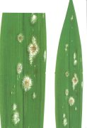

Gabona-lisztharmat
Erysiphe graminis
A lisztharmatgomba fertőzött növényeken telel át téli gombaszövedék (micélium) alakban. Tavasszal a gabonát fertőzi meg. Áporodott, dús, vattaszerű gombaszövedéka jellegzetes kórkép. A gomba külső parazita, mely gátolja a növekedést, csökkenti az ezermagtömeget.
Védekezés:
 vetésváltás
vetésváltás
 gombaölő szerek (Sportak,
Partner, Prelude)
gombaölő szerek (Sportak,
Partner, Prelude)